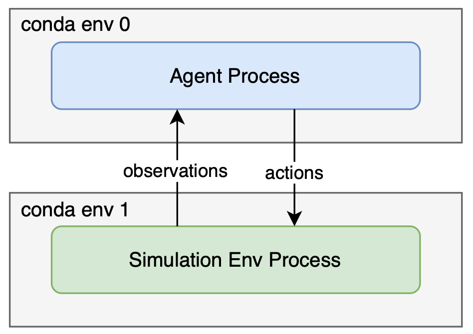

Run Benchmark Baseline¶
NOTE: Benchmark baseline can only be run with the source code of GRUtopia currently. If GRUtopia is installed through pip, you must clone the repository of GRUtopia first.
$ git clone git@github.com:OpenRobotLab/GRUtopia.git
Overview¶
The system overview when running the benchmark baseline is as follows:
The agent runs as a separate process with its own python virtual environment, and currently it communicates with the simulation env process through HTTP localhost.
If you are running GRUtopia in a container, a separate container is recommended for running the agent, and make sure they are in the same network namespace (that is, the containers can connect to each other through localhost).
For social-navigation/mobile-manipulation benchmark, both the agent process and simulation env process require 16GB+ VRAM separately. We’ve tested them on a host with 2 RTX 4090 equipped, one for the baseline agent process and one for the simulation env process, and you can take it as a spec reference.
Hardware requirements:
At least 2 RTX-4090 on the same host (or other RTX GPU with equivalent VRAM resource).
64GB+ RAM
Generally, running benchmark with our agent baseline including the following steps:
Start the baseline agent process.
Generate config for all episodes.
Run all episodes in simulation.
NOTE: Agents implementations are currently in the directory GRUtopia/grutopia_extension/agents/. They may be migrated to a separate repo in the future.
Mobile Manipulation¶
1 Start Baseline Agent For Mobile Manipulation Benchmark¶
1.1 Install Environment Dependencies¶
Create a new conda/venv env (for agent), and then install the dependencies within the env:
# make sure your cuda toolkit version matches your pytorch cuda version
cd grutopia_extension/agents/mobile_manipulation_agent
pip install -r requirements.txt
Tmux is required for running the agent entrypoint script. You can install it by:
sudo apt update
sudo apt install tmux
1.2 Install Submodules¶
# PWD: grutopia_extension/agents/mobile_manipulation_agent
mkdir images
# Please make sure your torch cuda version is equal with your cuda version
# GroundingDINO
git clone https://github.com/IDEA-Research/GroundingDINO.git
# YOLOv7
git clone https://github.com/WongKinYiu/yolov7.git
The directory structure of the submodules are as follows:
grutopia_extension
├── agents
│ ├── mobile_manipulation_agent
│ │ ├── GroundingDINO # GroundingDINO repo
│ │ ├── images # Empty directory
│ │ └── yolov7 # yolov7 repo
1.3 Download Model Weights¶
# PWD: grutopia_extension/agents/mobile_manipulation_agent
mkdir data
cd data
Download the necessary model weights from the provided sources and place them in an accessible directory within the project, put them under data folder. These weights are essential for running models.
MobileSAM: Download mobile_sam.pt from the MobileSAM GitHub Repository.
GroundingDINO: Download groundingdino_swint_ogc.pth from the GroundingDINO GitHub Repository.
YOLOv7: Download yolov7-e6e.pt from the YOLOv7 GitHub Repository.
NOTE: Ensure these files are saved in a directory where the code can access them.
grutopia_extension
├── agents
│ ├── mobile_manipulation_agent
│ │ ├── data
│ │ │ ├── groundingdino_swint_ogc.pth
│ │ │ ├── mobile_sam.pt
│ │ │ └── yolov7-e6e.pt
1.4 Configure API Key¶
Put your api key under ./modules/vlm/api_key.
grutopia_extension
├── agents
│ ├── mobile_manipulation_agent
│ │ ├── modules
│ │ │ └── vlm
│ │ │ │ └── api_key
│ │ │ │ │ ├── azure_api_key.txt
│ │ │ │ │ └── azure_api_key_e.txt
As mentioned above:
azure_api_key.txt: The API key for the Azure OpenAIgpt-4omodel.azure_api_key_e.txt: The API key for the Azure OpenAItext-embedding-3-largeembedding model.
You can learn how to get the keys through this link.
1.5 Run the Agent Process¶
Launch the agent process
# PWD: grutopia_extension/agents/mobile_manipulation_agent
./scripts/launch_vlm_servers.sh
2 Generate episodes config for mobile manipulation task¶
A python script generate_mm_episodes.py is provided to generate episodes config for mobile manipulation task. Currently it generates a python entrypoint file for each episode, since our env does not fully support multiple episodes yet. For example, if there’s 30 episodes to run for the benchmark, 30 python scripts will be generated, and each python script contains the full process to run one episode in simulation Env.
# generate episodes config for mobile manipulation task
cd PATH/TO/GRUTOPIA/ROOT
cd ..
python GRUtopia/grutopia_extension/agents/mobile_manipulation_agent/generate_mm_episodes.py --help # See options when generating episodes config
python GRUtopia/grutopia_extension/agents/mobile_manipulation_agent/generate_mm_episodes.py
If no options are provided, the generated scripts will be saved in ./mm_episodes. You can override the path when generating (see --help).
3 Run the Episodes in Simulation Env¶
Open a new session and switch to the python virtual environment for simulation env, which is the one you created when install GRUtopia.
First install the dependencies required for running the benchmark:
cd PATH/TO/GRUTOPIA/ROOT
pip install -r requirements/benchmark.txt
It may take quite a long time to run all the episodes. You can verify the setting by running the demo episode first:
cd PATH/TO/GRUTOPIA/ROOT
cd ..
python GRUtopia/grutopia/demo/mobile_manipulation.py
If the demo episode runs successfully, you can run all the episodes in the benchmark by running all the python scripts generated in step 2. The scripts can also be distributed to different machines and run in parallel as long as the agent process is started on these machines (since currently the two processes can only communicated through localhost…).
Currently, the process and logic of running benchmark baseline is quite rough, and we are continuously working on optimizing it.
Social Navigation¶
1 Start Baseline Agent For Social Navigation Benchmark¶
1.1 Install Dependencies for Agent¶
Create a new conda/venv env (for agent), and then install the dependencies within the env:
Tmux is required for running the agent entrypoint script. You can install it by:
1.2 Install Submodules¶
The directory structure of the submodules is as follows:
1.3 Download Model Weights¶
Download the necessary model weights from the provided sources and place them in an accessible directory within the project, put them under the data folder. These weights are essential for running the models.
MobileSAM: Download mobile_sam.pt from the MobileSAM GitHub Repository.
GroundingDINO: Download groundingdino_swint_ogc.pth from the GroundingDINO GitHub Repository.
YOLOv7: Download yolov7-e6e.pt from the YOLOv7 GitHub Repository.
1.4 Configure API Keys¶
Put your API keys under
./modules/vlm/api_key.As mentioned above:
azure_api_key.txt: The API key for the Azure OpenAIgpt-4omodel.azure_api_key_e.txt: The API key for the Azure OpenAItext-embedding-3-largeembedding model.You can learn how to get the keys through this link.
1.5 Run the Agent Process¶
Launch the agent process
# PWD: grutopia_extension/agents/social_navigation_agent ./scripts/launch_vlm_servers.sh2. Generate episodes config for social navigation task¶
A python script
generate_sn_episodes.pyis provided to generate episodes config for social navigation task. Currently it generates a python entrypoint file for each episode, since our env does not fully support multiple episodes yet. For example, if there’s 30 episodes to run for the benchmark, 30 python scripts will be generated, and each python script contains the full process to run one episode in simulation Env.If no options are provided, the generated scripts will be saved in
./sn_episodes. You can override the path when generating (see--help).3 Run the Episodes in Simulation Env¶
Open a new session and switch to the python virtual environment for simulation env, which is the one you created when install GRUtopia.
First install the dependencies required for running the benchmark:
It may take quite a long time to run all the episodes. You can verify the setting by running the demo episode first:
If the demo episode runs successfully, you can run all the episodes in the benchmark by running all the python scripts generated in step 2. The scripts can also be distributed to different machines and run in parallel as long as the agent process is started on these machines (since currently the two processes can only communicated through localhost…).
Currently, the process and logic of running benchmark baseline is quite rough, and we are continuously working on optimizing it.